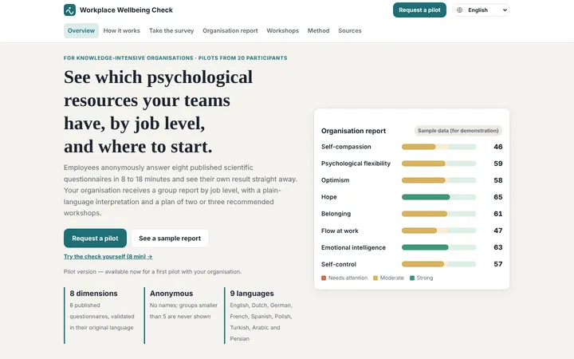

Workplace Wellbeing Check
Anonymous psychological-wellbeing check for organisations. 8 validated questionnaires, an instant personal snapshot, a report by job level and matched workshop recommendations.
My role: problem framing, service design, scoring method, report and UX.